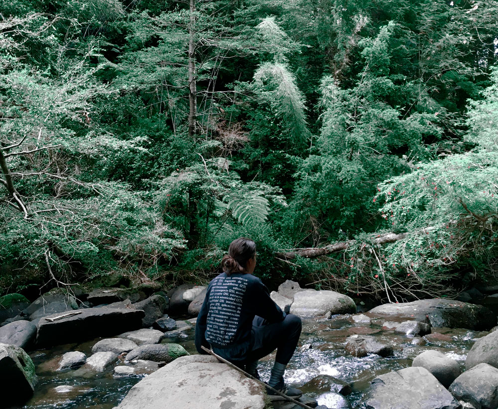

Paisajes Sonoros

Archivo de paisajes sonoros registrados en viajes circunstanciales por Chile y
Latinoamérica, entre 2016 y la actualidad. Las grabaciones contemplan desde ambientes naturales,
hasta situaciones urbanas particulares. Parte de mis registros pueden ser oídos en Archive.org, y una
geolocalización puede visualizarse en la plataforma Audiomapa.org, buscando por autor a
Todos los archivos están licenciados bajo Creative Commons 4.0 internacional. Puedes copiar y distribuir en cualquier medio o formato y adaptarlo, remixearlo o transformarlo, siempre y cuando des la atribución correspondiente al autor, y NO sea para fines comerciales.


Proyectos
2023 Utopías y distopías de la modernidad | (Investigación/Antártica)2022 Revuelta | (Documental sonoro/Estallido social)
2021 Tres reconstituciones y un documental sonoro | (Metro de Santiago/Música ambient)
2019 A las cacerolas | (Álbum/Estallido social/22bits)
2018 Espectral | (Investigación/Creación/Ruinas/22bits)
Muestra de registros
Información
01. Grillos nocturnos
02 - Gotas de caverna
03. Cantora callejera
04. Garúa de bosque
05. Cantautor en andén de metro
06. El afinador de pianos y la CNC
07. Interferencia en parlante de metro
08. Ambiente de bosque nativo
09. Escaleras mecánicas o rítmica capitalista
10. Partido de fútbol, AN Medellín vs Millonarios
11. Niñas y niños jugando en piscina interior
12. Ascenso de Truss
13. La última lluvia del 2021
14. Amanecer en Río Imperial
15. Bosca de noche
16. Mar y viento en Puerto Saavedra
17. Río Toltén y Niña
18. Atardecer en Río Imperial
19. Lluvia y truenos en Manizales
20. Cosecha de café
21. Ambiente en La Conejera 10 am
22. Pequeño ecosistema de sapitos